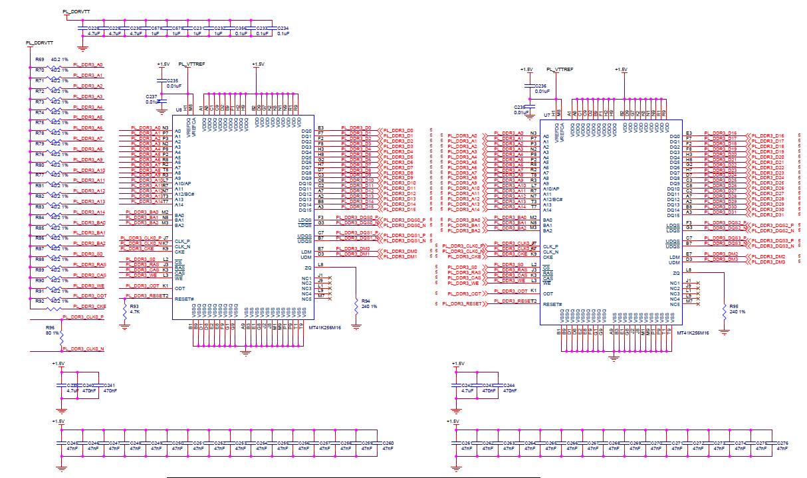
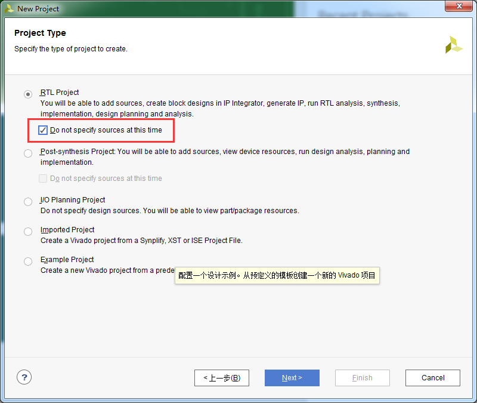
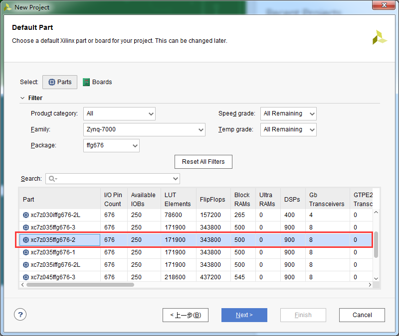
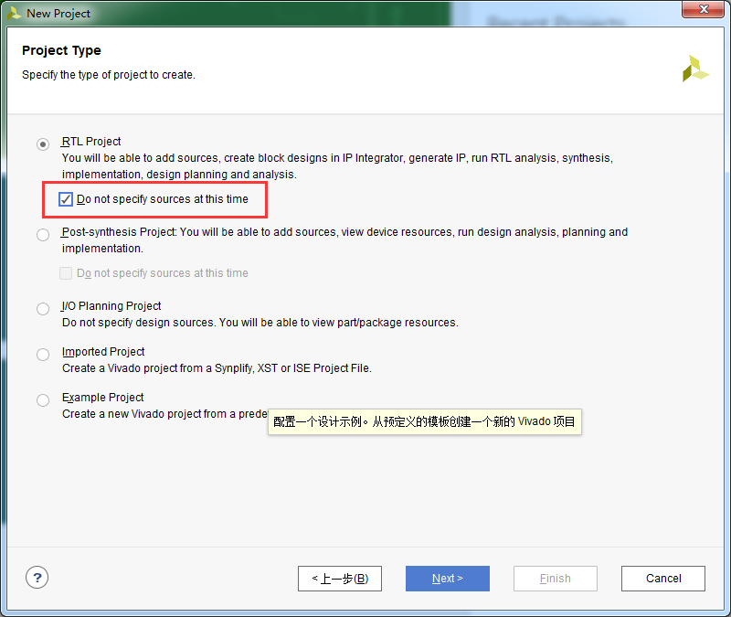
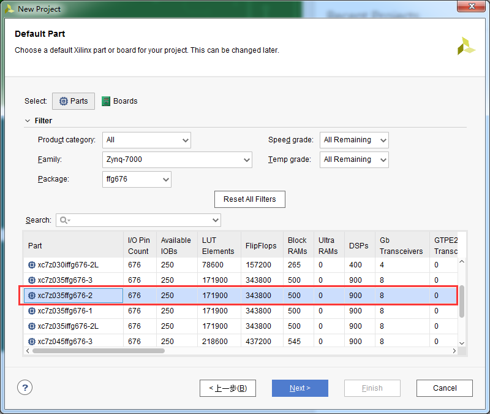
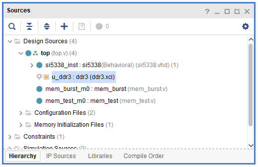

PL端DDR3读写测试实验¶
实验VIvado工程为“ddr3_pl_test”。
硬件介绍¶
开发板的PL端有2颗16bit ddr3，这很大程度方便我们移植以前的FPGA工程到ZYNQ系统中，同时也提供了更大的带宽。
{kind=link}
Vivado工程建立¶
创建一个PL端ddr3测试工程¶
 



{kind=link}
{kind=link}
配置ddr3 IP¶
在“IP Catalog”的搜索框搜索“mig”，快速找到“Memory Interface Generator”，双击

点击“Next”
{kind=link}
“Component Name”修改为“ddr3”，以后我们例化ddr3就可以，点击“Next”
{kind=link}
点击“Next”
{kind=link}
控制器类型选择“DDR3 SDRAM”，点击“Next”
{kind=link}
“Memory Part”选择“MT41J256m16XX-125”,“Data Width”选择32
{kind=link}
“Input Clock Period”选择5000ps（200MHz）
{kind=link}
“System Clock”选择“No Buffer”,“Reference Clock”选择“Use System Clock”，“System Reset Polarity”选择“ACTIVE LOW”，点击“Next”
{kind=link}
使能DCI Cascade，点击“Next”
{kind=link}
选择“Fixed Pin Out：Pre-existing pin out is konwn and fixed”
{kind=link}
点击“Read XDC/UCF”
{kind=link}
选择ddr.ucf,这里可以选择工程里已经存在的XDC文件，只要包含ddr3的管脚分配信息就可以。
{kind=link}
点击“Validate”
{kind=link}
选择测试输出的管脚，这里保持默认，不配置
{kind=link}
点击“Next”
{kind=link}
点击“Access”接受条款
{kind=link}
点击“Next”
{kind=link}
点击“Generate”
{kind=link}
在弹出的“Generate Output Products”中选择“Generate”
{kind=link}
添加其他测试代码¶
其他代码主要功能是配置si5338，读写ddr3并比较数据是否一致，这里不做详细介绍，可参考工程代码。
{kind=link}
下载调试¶
生成bit文件以后，使用JTAG下载到开发板，我们可以通过LED来观察ddr3测试情况，LED1亮表示si5338配置完成，LED2亮表示ddr3 读写有错误，LED3亮表示ddr3控制器初始化完成，LED4闪烁表示ddr3测试程序在运行。
实验总结¶
本实验通过PL端Verilog代码直接读写ddr3，通过LED来显示测试结果，我们也可以把ddr3配置成AXI接口，这样方便和ARM系统完成数据交互。
ZYNQ-7000开发平台 FPGA教程 - Alinx官方网站